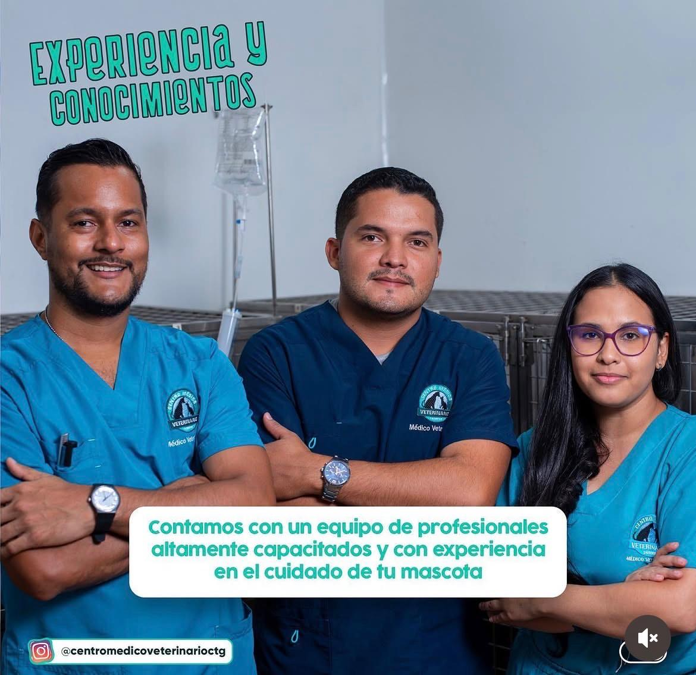
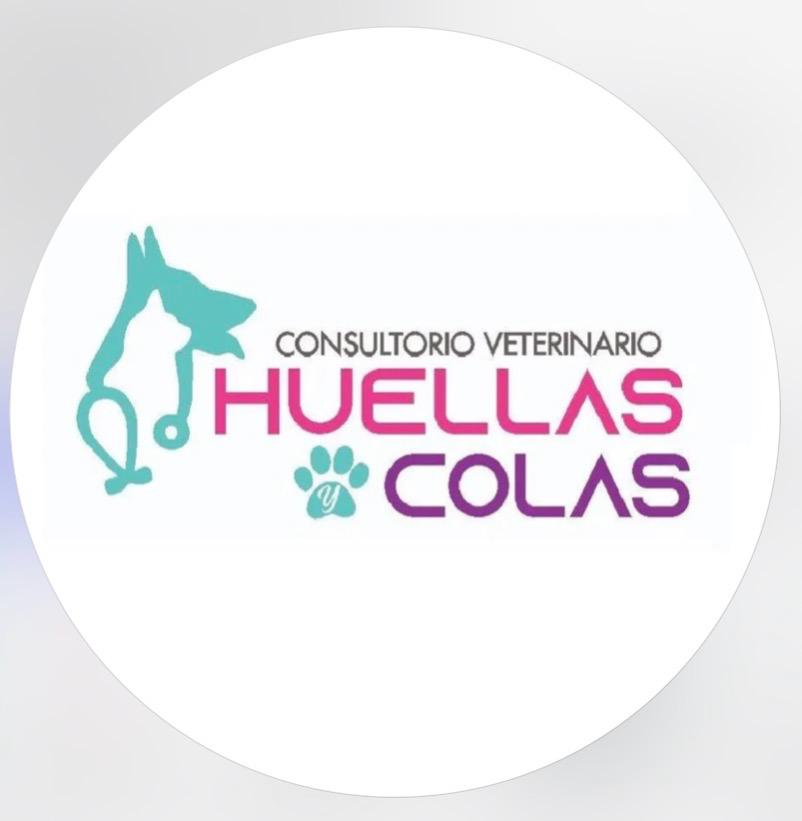
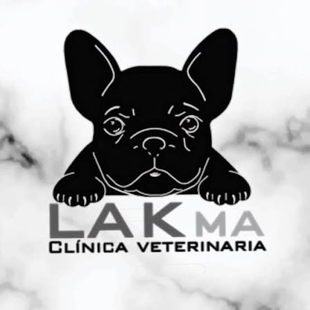
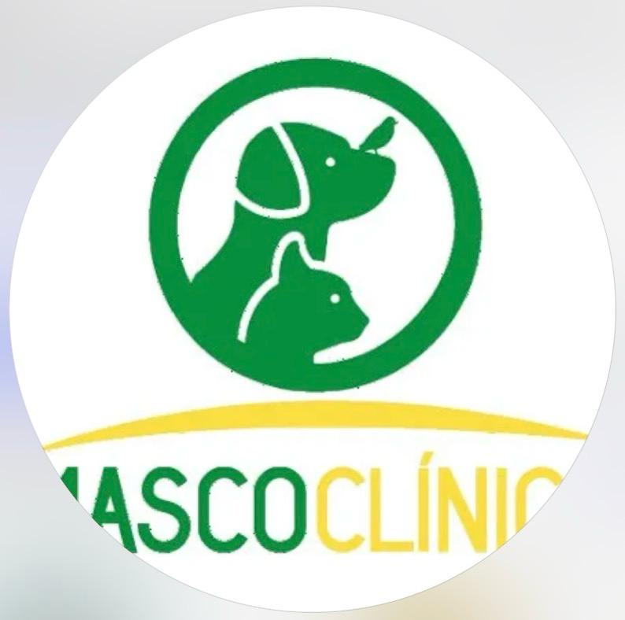
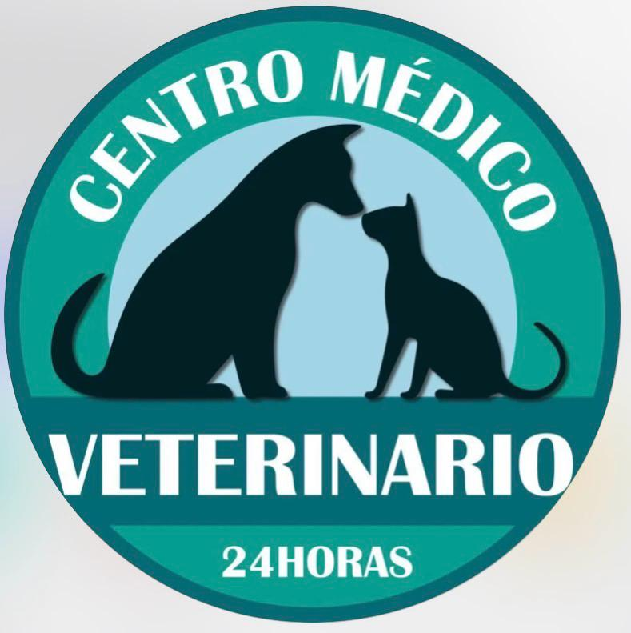
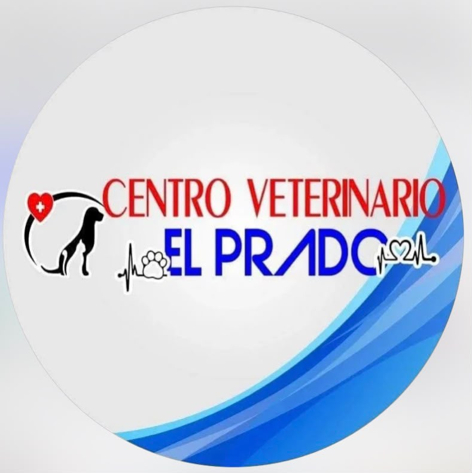
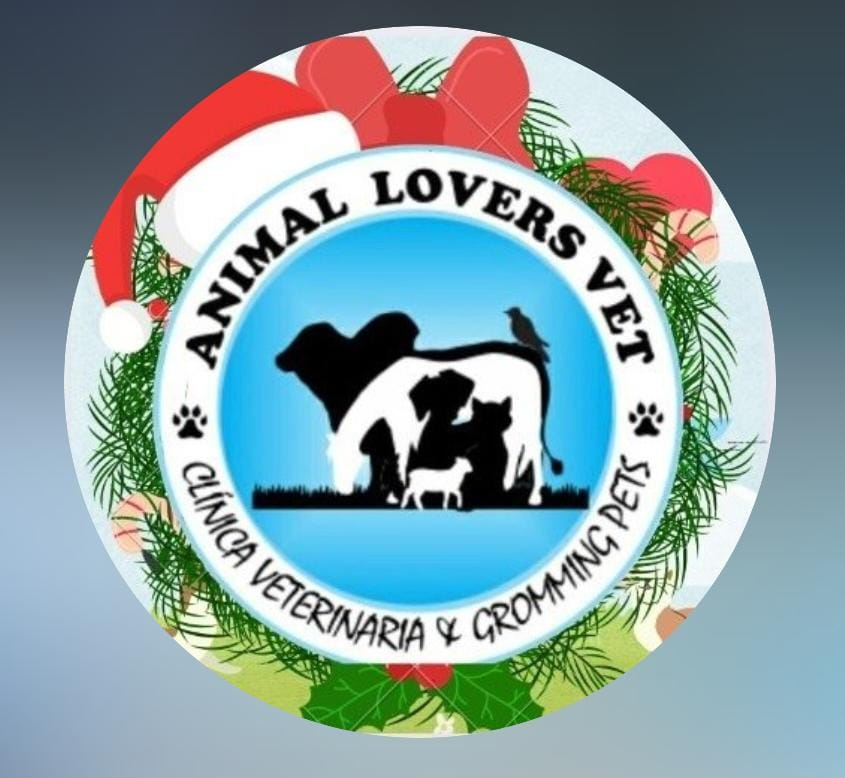
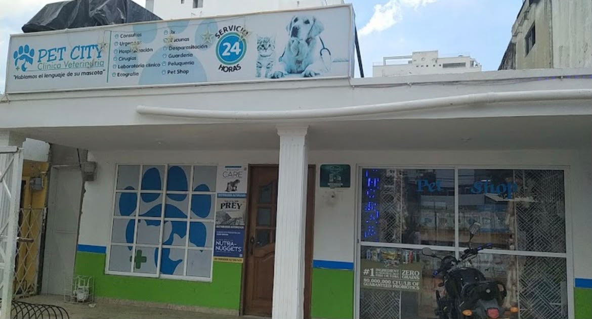

Servicios
Ofrecemos soluciones en comunidad y ayudas gratuitas entre todos.
Veterinarios Disponibles
Norela morano

Medica veterinaria especialista en nutricion de animales de compañia y experta en gastroenteorologia
Veterinarios Sos.
Servicios disponibles:
Atención de consulta general y especializada, procedimientos quirúrgicos, vacunación, servicio de farmacia veterinaria y ecografías para el diagnóstico y seguimiento de la salud de tu mascota.
Contacto :
3232163721
UbicacionUM V

UM V Profesionales Al Cuidado De Su Mascota S.A.S Hospital veterinario.
Servicios: Aves, Cirujano veterinario, Desparasitación, Eutanasia, Hospitalización, Laboratorio de análisis, Radiografías veterinarias, Servicio a domicilio, Servicio de emergencia, Vacunas, Veterinario de gatos, Veterinario de perros, Ecografías, Radiografías, Terapias, Laboratorio, Curaciones, Profilaxis dental, Curaciones Contacto:
300 8193115
Redes Sociales: @unidadmedicaveterinaria UbicacionHuellas y colas

Consultorio Veterinario Huellas y Colas. Hospital veterinario.
Servicios:
Cirujano veterinario, Desparasitación, Esterilizaciones, Eutanasia, Hospitalización, Laboratorio de análisis, Servicio a domicilio, Servicio de emergencia, Vacunas, Veterinario de gatos, Veterinario de perros, Pet shop, Consultas, Medicamentos, Asistencia de parto, Cesárea Contacto:
311 3974333
Red social: Instagram • @huellasycolas UbicacionLakma

Hospital veterinario.
Servicios: Cirujano veterinario, Desparasitación, Esterilizaciones, Hospitalización, Laboratorio de análisis, Radiografías veterinarias, Servicio de emergencia, Vacunas, Veterinario de perros, Veterinario de gatos, Certificado de Viajes, Consulta general y especializada, Farmacia, GROOMING & SPA, Guarderia Canina & Felina, Imagenología, Laboratorio, Medicina interna y especializa, Pet Shop, Urgencias 24 Horas, Vacunación y desparasitación
Contacto: 313 6081249
Red social: Instagram • @lakma_clinica_veterinaria UbicacionMASCOCLINICA CLINICA VETERINARIA.

Hospital Veterinario
Servicios: Laboratorio de análisis, Radiografías veterinarias, Veterinario de gatos, Veterinario de perros, Servicio de emergencia, Servicio a domicilio, Hospitalización, Desparasitación, Esterilizaciones, Vacunas, Cirujano veterinario, Ecografias, Electrocardiograma, Cuidado y aseo de gatos, Aseo para perros, Baño para gatos, Higiene de orejas para gatos, Aseo y peluquería para gatos, Recorte de uñas para gatos, Compresión de glándula anal de perros, Baño y secado para perros, Higiene de orejas para perros, Tratamientos contra pulgas y garrapatas, Servicio completo de aseo para perros, Aseo y peluquería para perros, Recorte de uñas para perro, Cepillado de dientes para perros, Alimentos
Contacto: (605) 6431008
Red social: Instagram @mascoclinica UbicacionCentro Médico Veterinario Cartagena.

Veterinario.
Servicios: Esterilizaciones, Hospitalización, Laboratorio, Radiografías veterinarias, Servicio a domicilio, Servicio de emergencia, Vacunas, Veterinario de perros, Veterinario de gatos, consulta
Contacto: 300 5660812
Red social: Instagram @centromedicoveterinarioctg UbicacionClínica Veterinaria Mascotas 24 Horas.

Veterinario.
Contacto:300 3268530
Red social: Instagram • @mascotas24horas UbicacionCentro veterinario el Prado

Hospital veterinario.
Contacto:310 7061204
Red social: Instagram @centroveterinarioelprado UbicacionVeterinaria Animal lover.

Hospital veterinario.
Contacto:324 6097774
Red social: Instagram @vet_animallovers UbicacionClinica veterinaria pet city.

Hospital veterinario.
Contacto:(605) 6487158
Red social: Instagram @clinicaveterinariapetcity Ubicacion